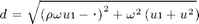
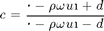

function f = f2(u,F,K,kappa,theta,omega,tau,V0,rho) f = 0; if (tau > 0) && (V0 >= 0) && abs(rho) < 1

d = sqrt((rho*omega*u*1i - kappa).^2 + omega^2*(u*1i+u.^2));

c = (kappa - rho * omega * u * 1i + d) / (kappa - rho * omega * u * 1i - d);
tc = angle(c);
Gd = c - 1;
m = floor((tc + pi)/(2*pi));
Gn = c * exp(d * tau) - 1;
n = floor((tc + imag(d)* tau + pi)/(2*pi));
lnG = log(abs(Gn)/abs(Gd)) + 1i * (angle(Gn) - angle(Gd) + 2*pi * (n - m));
D = (kappa - rho * omega * u * 1i + d) / omega^2 * ((exp(d * tau) - 1)/(c * (exp(d * tau) - 1)));
C = (kappa * theta) / omega^2 * ((kappa - rho * omega * u * 1i + d) * tau - 2 * lnG);
phi = exp(C + D * V0 + 1i * u * log(F));
f = real(exp(-1i*u.*log(K)).*phi./(1i * u));
end end